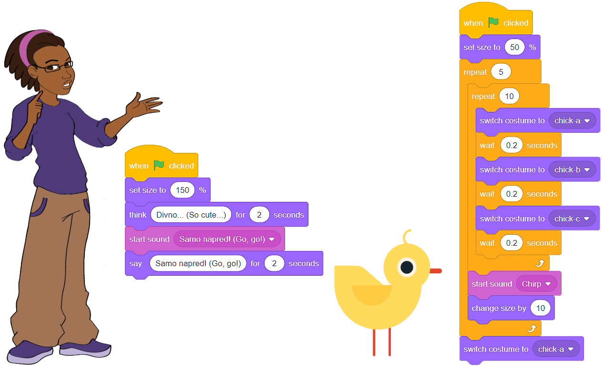

Zvuk¶
Mogućnost da likovima, osim oblačića sa mislima i tekstom, dodelimo zvuk pruža šansu da programi koje stvaramo budu dinamičniji i zanimljiviji.
Skreč raspolaže bogatom bibliotekom zvukova, kako i mogućnošću da snimimo sopstveni glas ili učitamo zvučni zapis sa svog računara u .wav ili .mp3 formatu. Blokovi nakon čijeg izvršavanja čujemo zvuk nalaze se u kategoriji Zvuk (Sound).
Oglašavanje likova¶
Unapredićemo program Farma (Farm), koji se nalazi na adresi https://scratch.mit.edu/projects/326422653/, tako da devojka (Avery) zaista izgovori „Samo napred! (Go, go!)”, a pile (Chick) zacvrkuće nakon dobrog obroka.
Prvu aktivnost predstavlja snimanje zvuka - našeg glasa: snimićemo i u skriptu devojke dodati zvučni zapis našeg izgovora teksta: „Samo napred! (Go, go!)”.
Snimanje zvuka
Pre nego što izvedemo aktivnost snimanja zvuka, moramo da:
podesimo da lik devojke bude aktivan (u Listi likova njen lik ima plavi okvir);
kliknemo na karticu Zvuk (Sound);
Izaberemo opciju Record.

Otvorio se prozor Record Sound, u okviru koga otpočinjemo snimanje zvuka.
Kliknemo da crveno dugme i izgovorimo rečenicu: „Samo napred! (Go, go!)”;
Preslušamo snimak klikom na dugme Play i, ako smo zadovoljni, kliknemo na dugme Save, a ako nismo, na dugme Re-record i ponovimo proces;
U kartici Zvuk (Sound) pojaviće se vizuelni prikaz našeg snimka;
U kategoriji Zvuk (Sound) pojaviće se blokovi koji omogućavaju da se, tokom izvršavanja programa naš glas čuje.

Cvrkut pileta pronaći ćemo u biblioteci zvukova i učitati ga.
Ne smemo da zaboravimo da pile mora biti aktivan lik, inače će cvrkut biti deo devojčinih blokova.

Spremni smo da dodamo blokove naredbi u programski kod.
{kind=link}
 Remiksuj projekat Farma (Farm) koji se nalazi na adresi https://scratch.mit.edu/projects/326422653/. Snimi zvuk i dodaj odgovarajući blok u skriptu devojke. Iz biblioteke zvukova, dodaj odgovarajući zvuk cvrkuta u skriptu pileta.
Remiksuj projekat Farma (Farm) koji se nalazi na adresi https://scratch.mit.edu/projects/326422653/. Snimi zvuk i dodaj odgovarajući blok u skriptu devojke. Iz biblioteke zvukova, dodaj odgovarajući zvuk cvrkuta u skriptu pileta.
- Da smo uradili obrnuto, čuo bi se naš glas, pa tek nakon izgovorene rečenice pojavio bi se oblačić sa tekstom.
- Potpuno si u pravu!
- Mogli smo da upotrebimo i drugi blok, program bi se izvršio na isti način.
- Nisi u pravu. U projektu *Farma (Farm)* zameni blok koji je prikazan na našoj slici i analiziraj rezultat izvršavanja.
Q-13: U programu Farma (Farm), za dodavanje zvuka izabrali smo blok , a ne  . Zašto?
. Zašto?
Komponovanje muzike¶
Komponovanje muzike zahteva dodavanje nove kategorije blokova u radno okruženje Skreča. To činimo tako što kliknemo na dugme  koje se nalazi u donjem levom uglu prozora, a zatim odaberemo ekstenziju Muzika (Music).
koje se nalazi u donjem levom uglu prozora, a zatim odaberemo ekstenziju Muzika (Music).

Bez obzira na to koji jezik govore, uspavanka Frère Jacques poznata je ljudima iz celog sveta. Ako ti je pesma nepoznata, potraži je na YouTube-u, a mi ćemo ti pomoći da je komponuješ u Skreču.
Kao instrument, izabraćemo električni klavir (1), a zatim ćemo povezati note tako da, izvršavanjem programa zasvira ova čuvena uspavanka.

Remiksuj projekat Frère Jacques koji se nalazi na adresi https://scratch.mit.edu/projects/326431999/ i dodaj blokove koji će doprineti „punoći zvuka” (bubnjeve ili ritam sekciju). Koristi instrumente iz padajuće liste bloka  . Koristeći odgovarajući blok iz kategorije Zvuk (Sound) pojačaj čujnost svake od strofa za po 10.
. Koristeći odgovarajući blok iz kategorije Zvuk (Sound) pojačaj čujnost svake od strofa za po 10.
 Pokušaj da otpavaš pesmu Frère Jacques bez muzike i snimiš je. Dodaj je u Skreč program Frère Jacques. Sigurni smo da će to biti interesantan aranžman!
Pokušaj da otpavaš pesmu Frère Jacques bez muzike i snimiš je. Dodaj je u Skreč program Frère Jacques. Sigurni smo da će to biti interesantan aranžman!